Inspired by Anscombe's Quartet [1] and the Datasaurus Dozen [2], and the natural extension of my own prior work [3] we hereby present the DataDance DoubleDozen:
A collection of 24 distinct data sets, corresponding to different time stamps, with the same summary statistics (up to 2 decimals) yet different visual properties. More importantly, when the 24 distinct data sets in the DataDance DoubleDozen are plotted sequentually in a video format they depict a rather well-known dancing figure.
Anscombe's Quartet, the Datasaurus Dozen, and the DataDance DoubleDozen all highlight the importance of visualizing your data and to not only trust summary statistics. These works explicitly show you that the visual properties of a graph can vary immensely while still having the same summary statistics.
The DataDance Double Dozen differs from the Datasaurus Dozen in that it consist of specific complicated shapes that cannot be attained with the same implementation used to create the Datasaurus Dozen. Additionally, each time stamp contains 250 points versus 142 in the Datasaurus Dozen. We've extended our method to work for any number of points. Note: for smaller number of points (n<100) the resolution of the target video decreases but the implementation should still function properly. Our code can be found on this page.
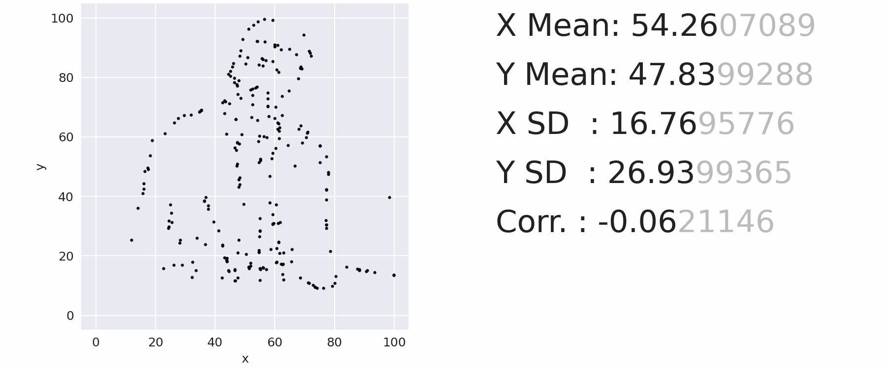
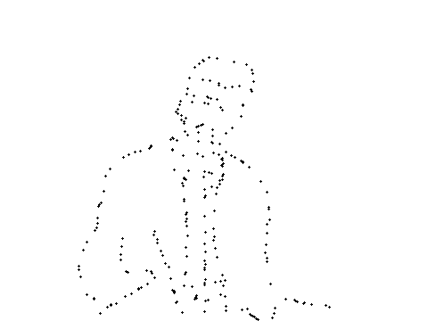
The following sections detail why I wanted to create such a data set and what other works have attempted similar things (Motivation), what I used to create the data sets (Method) and the results of my method (Results).
Author's note: Similar to the tedious paragraphs of text you might find at the start of a food recipe online, you can skip this section if you would like to only look at the method and/or results.
In the first year of my PhD in 2022 a MSc student (Bram Dijkers) of our group (Visualization and Graphics at UU) was working on scagnostics and highlighted the Datasaurus [4] scatterplot by Alberto Cairo. I was intrigued but at the time I was purely focused on Graph Drawing so I wrote it down as small curiosity I could explore in the future.
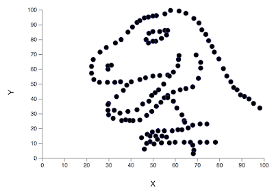
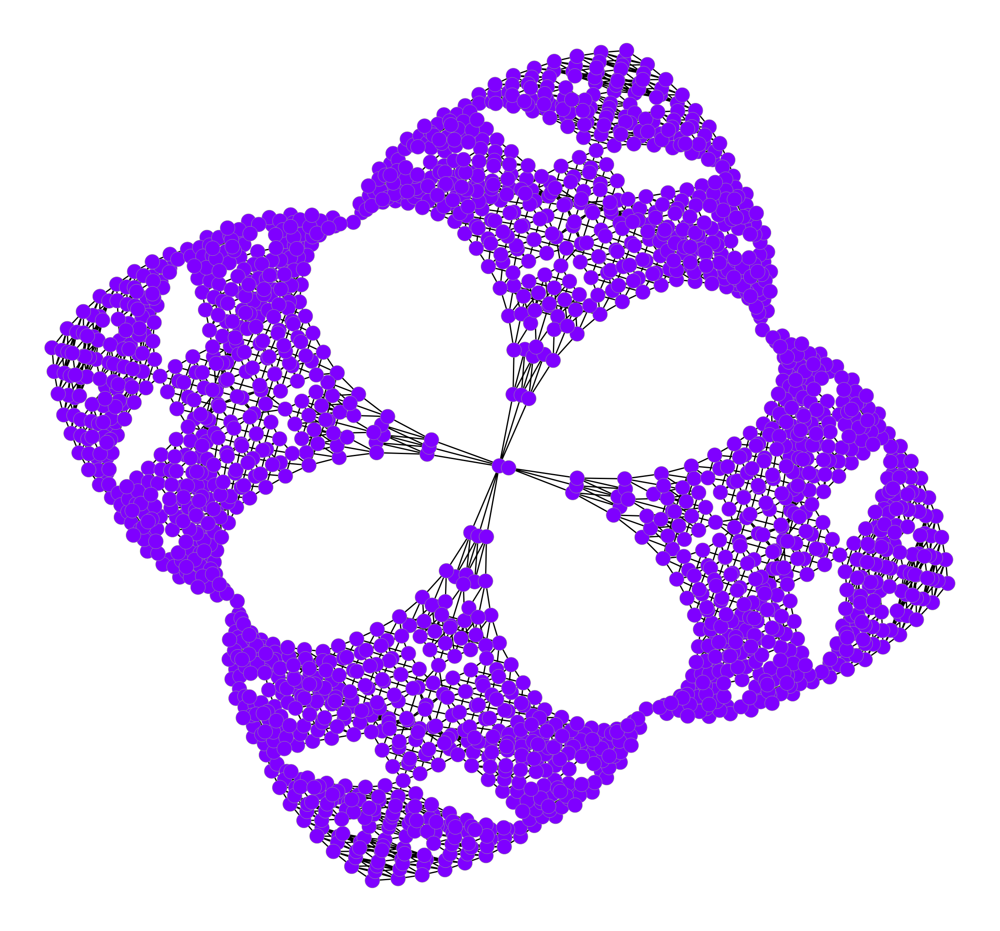
Later on, in preparation for the EuroVis conference in 2023, I came across a satirical work by Sara di Bartolomeo, Matej Lang and Cody Dunne on the worst graph layout algorithm ever [5]. While the work itself did not have anything to do with the Datasaurus Dozen or Anscombe's Quartet, it did suggest the idea of 'Rocketshipness' in which a graph drawing would be morphed into a rocket ship while keeping summary statistics the same, akin to the idea of the Datasaurus.
While I did not try and tackle the 'Rocketshipness' concept, I was curious whether the approach used to create the Datasaurus Dozen could be used in the field of Graph Drawing. I jotted it down as a future side-project and started working on it in late 2024 after my colleague Alister Machado showed me some preliminary results of his work [6] in which he completely distorted the visual properties of Dimensionality Reduction (DR) plots while retaining the same quality metric values.
Some context about the topic of Graph Drawing: In Graph Drawing, we create visual representations of relational data, i.e. networks. Similar to scatter plots, graph drawings tend to have dots/points in a 2D or 3D space with the addition of (often straight) lines connecting dots that have a direct connection with other dots. In Graph Drawing, we deal with so-called aesthetic criteria/quality metrics instead of statistics. These metrics either quantify how accurately the drawing portrays the underlying data (e.g. Stress) or measure how pleasing the drawing is (e.g. number of overlapping lines).
The work of Justin Matejka and George Fitzmaurice, titled Same Stats, Different Graphs [2], used simulated annealing to move points towards a target shape while keeping summary statistics the same. Me, my supervisor Tamara Mchedlidze and my promotor Alex Telea started working on applying the method used to create the Datasaurus Dozen for Graph Drawing and graph drawing quality metrics. Hence, we named our work "Same Quality Metrics, Different Graph Drawings" [3]. Obviously, the first thing I had to reproduce for this work was the Datasaurus.
Trying to keep multiple graph drawing quality metrics the same while moving to a target shape proved to be difficult. We modified the simulated annealing approach from [2] to work with graph drawing metrics, to be scale-invariant and to be able to morph into any point cloud shape that was given as input. We worked with a different distance function, one that ensured that no two points in the point cloud would move to the same target point in the target shape. For some graphs, this 'fooling' process was succesful, see Figures 5 and 6.
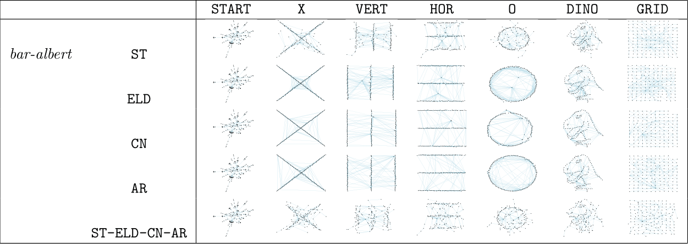
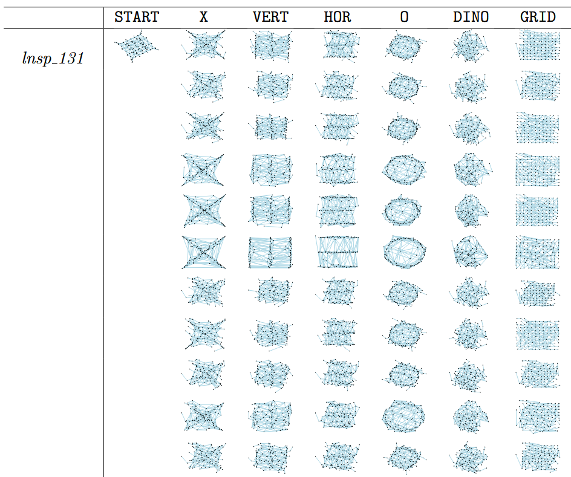
In addition to the Datasaurus (and some other target shapes from the Datasaurus Dozen) I wanted to replicate a new shape, something that had not been done before. I admit that I had always wanted to 'rickroll' a large group of unsuspecting people, so naturally I had to find a way to include that in my work. I figured that if I could extract frames from a short video and turn each frame into a target point cloud, I could apply my previously mentioned algorithm to create a sequence of graph drawings with the same metric values that look like the target rickrolling video. This worked better than expected, see Figures 7 and 8. Note: instead of keeping values fixed to two decimal points, we worked with a maximum difference of 0.0025 for ST, ELD, and AR, and a maximum difference of 5% for CN.
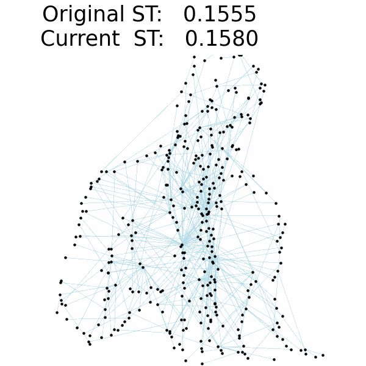
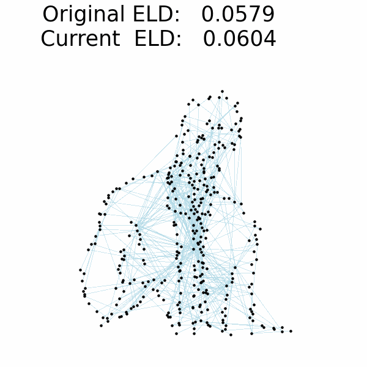
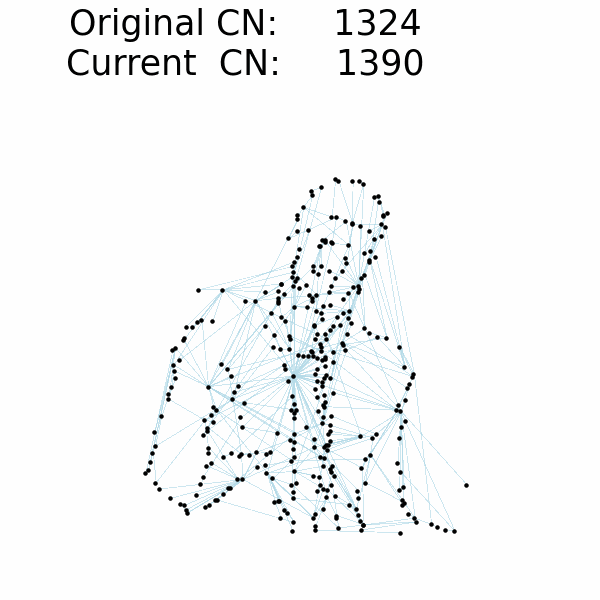
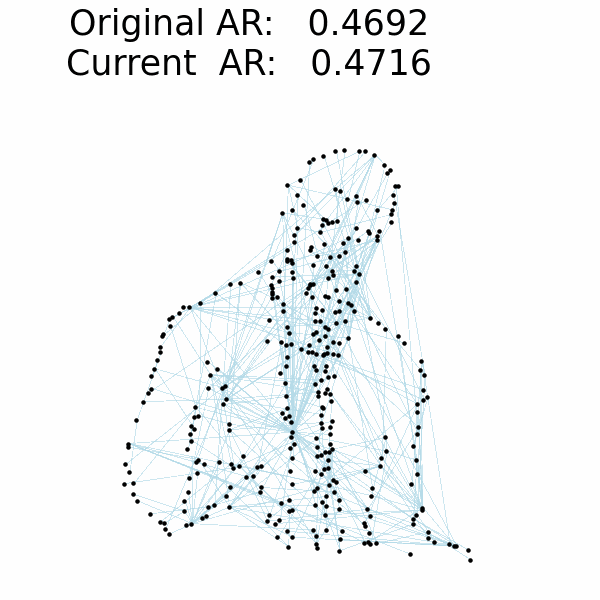
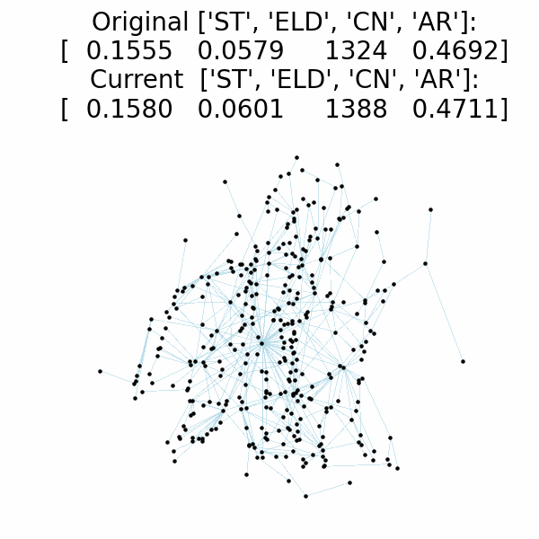
As can be seen from Figures 7-11, the rickroll video reproduction was a success! The video was reproduced as a sequence of graph drawings while keeping a single metric the same. Keeping all 4 metrics the same (Fig. 11) results in a poorer quality video. After these results, I figured that extending the same rickroll data set to work for summary statistics, similar to the Datasaurus Dozen, would be trivial. Even though this extension was less trivial than expected, the result seen in Figure 1 was another success! With this, the data set DataDance DoubleDozen was born.
The following subsections describe what changes we have made to existing code and the algorithm from [2].
The algorithm described used in [2] and visualized in Fig. 12 is simple, easy to replicate, and works well for replicating the shapes in the Datasaurus Dozen. We used a slight modification in our previous work [3] to make it work for graph drawings and their metrics. For the DataDance DoubleDozen we made major adjustments to the perturb function, the distance function (Fit in Fig. 12), and the noise function (MoveRandomPoints in Fig. 12). Our code is available on GitHub.
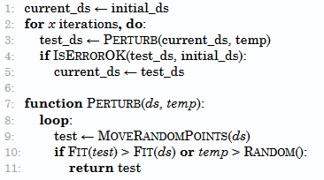
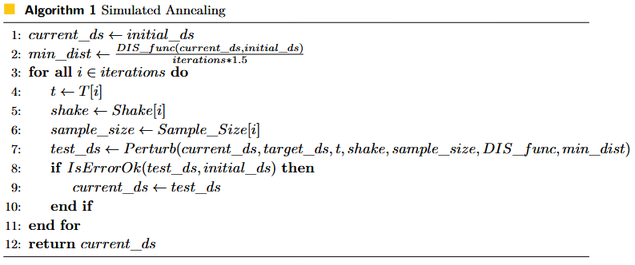
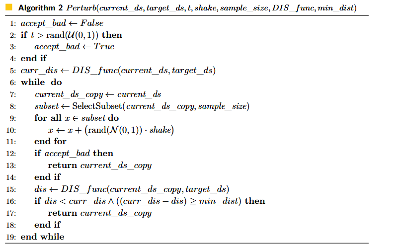
The pseudocode for the new simulated annealing algorithm is displayed in Figure 13, where Figure 14 depicts the perturbing function. Let's start with the perturb function. On top of the temperature and the shake factor, we added support for the following new parameters: sample size, distance function, and minimum distance.
sample size: Instead of moving a single random point per iteration, we now select a random subset of points to move per iteration.
distance function: Instead of using the same distance function every iteration, we now select a pre-specified distance function per iteration allowing us to switch between distance functions similar to multi-fidelity optimization.
minimum distance: Instead of moving a single point any distance towards its closest target point, we now only move one or more points iff they have improved the shape of the data set with a minimum amount.
The algorithm from [2] already included temperature and shake parameters. The temperature allowed for 'bad' solutions to be accepted by the algorithm. The shake parameter specified how much noise was added to a point to move randomly. In [2], only the temperature decreased over time as per the simulated annealing logic. We use this logic and apply it to the shake and sample size parameters as well, meaning that as the number of iterations increases, the number of points that are selected to move randomly and the amount of noise added to these points is decreased.
The distance function is a key part of this simulated annealing algorithm. In [2] the distance function computed the distances between the perturbed point to all target points. This could lead to multiple points in our data set moving to the exact same target points as can be seen in the figures of the Datasaurus Dozen. This is suboptimal for complicated shapes such as the rickroll figures. To alleviate this issue, we use both the fast but less precise Chamfer distance and the most optimal pair-wise distances computed by the Hungarian Algorithm. The chamfer distance does not necessarily prevent points from moving to the same closest target point but it can be used for quick movements. The Hungarian Algorithm, on the other hand, is slower but ensures no two points move towards the same closest target point. It takes as input an nxn distance matrix and computes the most optimal pairs of points between the initial data set and the target data set. In our pipeline, we square the distances in this matrix before passing it to the Hungarian Algorithm, to add importance to too long distances between points. After the most optimal pairs are found, the root of the distances are taken to transform them back into their original magnitudes.
From a reference video we extract the outlines from each frame. Subsequently, we then specify the number of points (250) we want to extract from these outlines in each frame to acquire a point cloud that resembles the shape in each original frame. We then scale and translate these resulting point clouds to make it easier to morph into them as the summary statistics are scale-dependent.
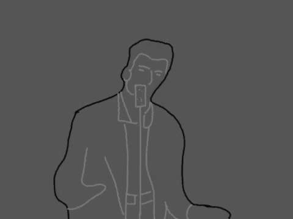
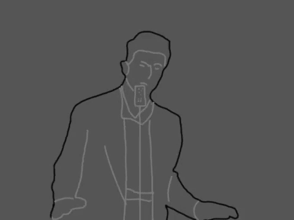
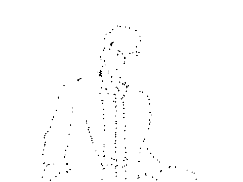
Initial data set: We noticed that when working with the Hungarian Algorithm the shape of the starting data set had an impact on how points moved towards a target shape. Figures 19 and 20 display the result of moving from a random point cloud of 250 points towards the 16th frame of DataDance. We used our algorithm and applied it to a random point cloud of 250 points (with the same summary statistics given by the Datasaurus Dozen) to move towards a circle. This resulted in the data set as shown in Fig. 21.
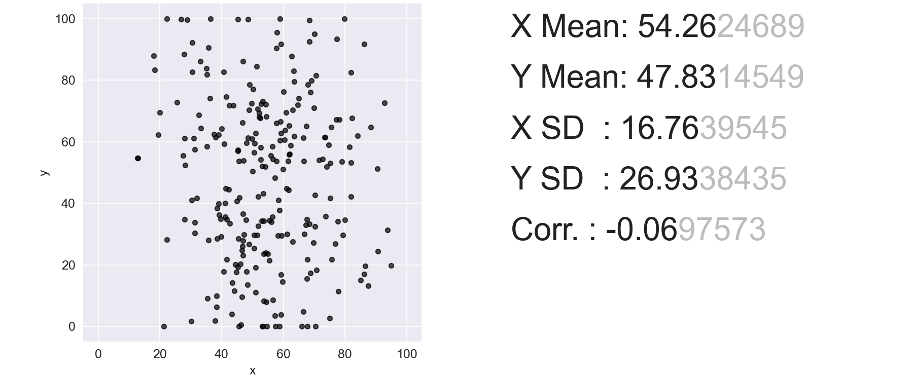
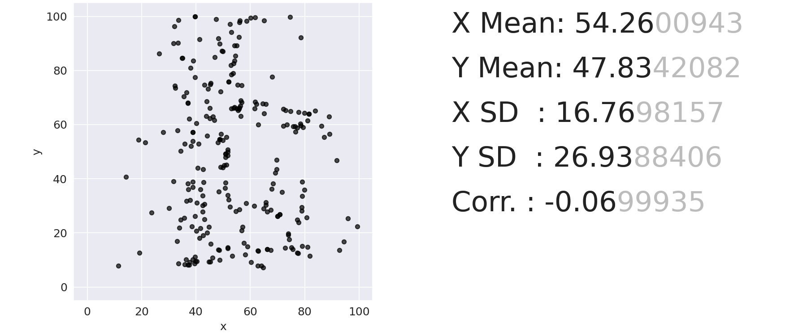
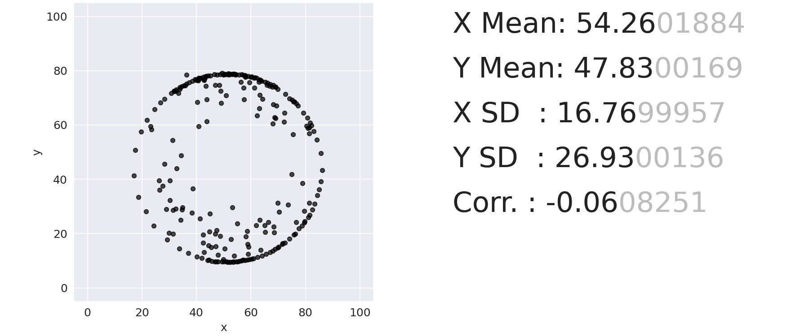
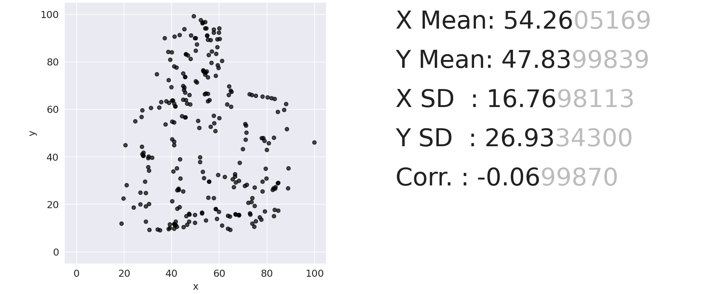
We use this circle data set to morph into all frames of DataDance (e.g. Fig. 22). For this we use the following parameter values:
temperature \(T = [\,0.4 \;\dots\; 0\,]^{iters}_{0}\)
\(shake = [\,0.5 \;\dots\; 0.1\,]^{iters}_{0}\)
\(sample\_size = [\,\frac{250}{35} \;\dots\; 1\,]^{iters}_{0}\)
Additionally, we use the Hungarian Algorithm for the first 85% of the iterations (\(iters = 150000\)). The remaining 15% of the iterations are performed with the Chamfer Distance. Once we've done this we have the first round of the DataDance.
We refine these results by repeating the process: the resulting data sets of the first round are given to the exact same algorithm as starting data sets. We change the starting temperature, starting shake, and the starting sample size to 0.15, 0.4, and 250/40, respectively. This gives us our final data set collection DataDance as displayed in Fig. 1.
Figure 1 showcases the final DataDance DoubleDozen in detail. In Figures 23-26 the progression of morphing a starting data set into one of the frames of the DataDance are shown.
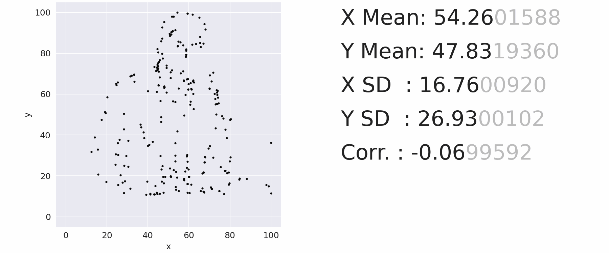
We replicated the Datasaurus Dozen data sets. The notable exception here is that we did not replicate the Datasaurus (yet) as the Datasaurus and its summary statistics was specifically designed for 142 points. We used a random cloud data set and added points to reach 250 points in total, while keeping the same summary statistics. We then morphed this random cloud data set into 12 target data sets, as can be seen in Figures 27-37. For this, we used the Chamfer distance for the first 85% of the iterations followed by the Hungarian Algorithm for the remainder.
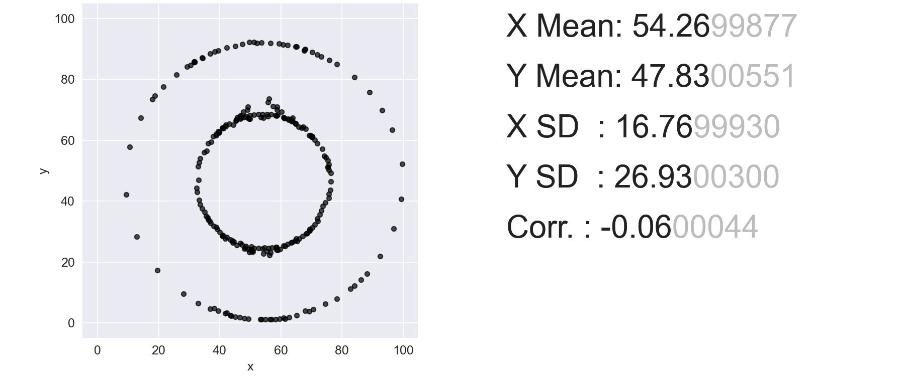
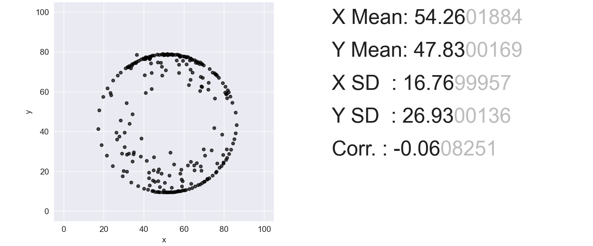
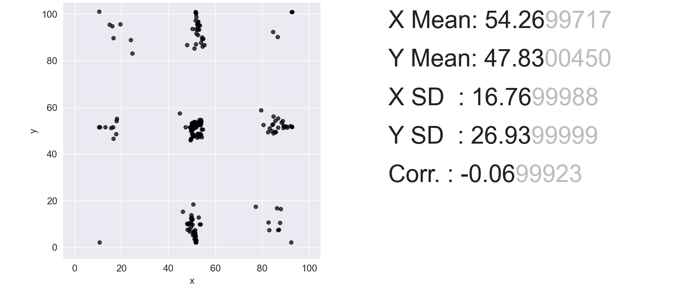
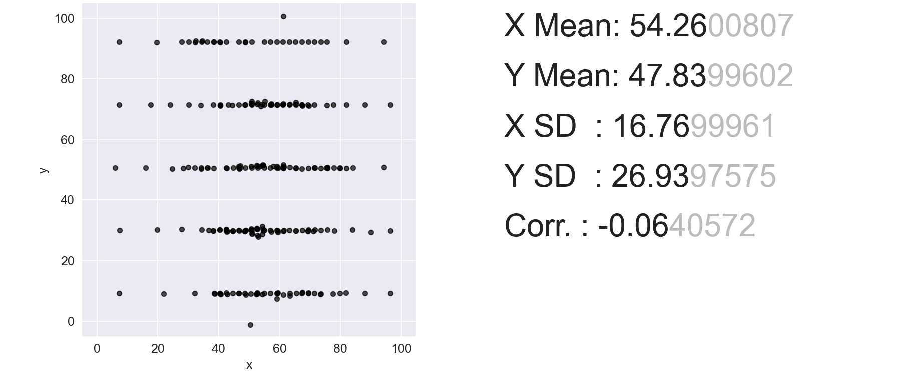
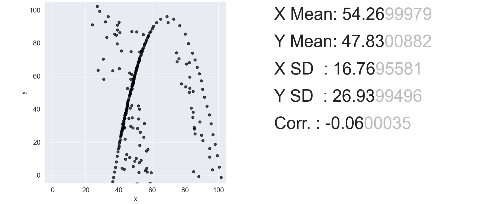
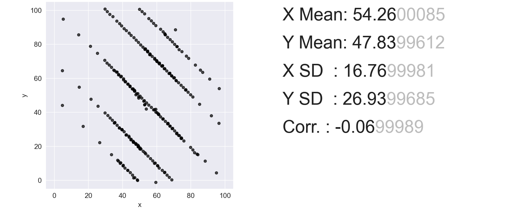
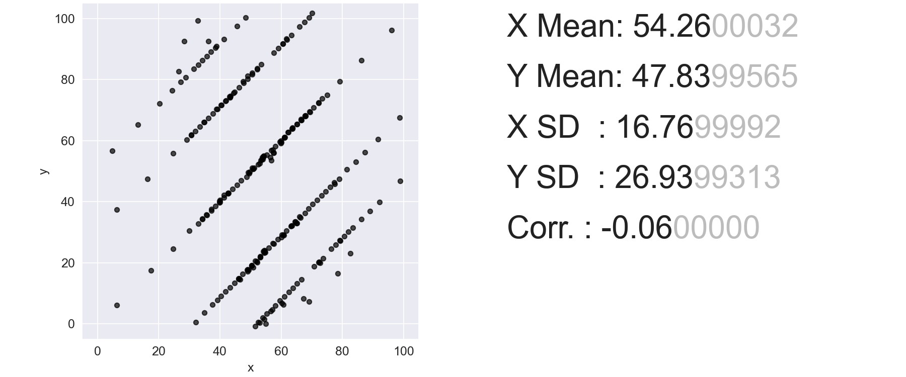
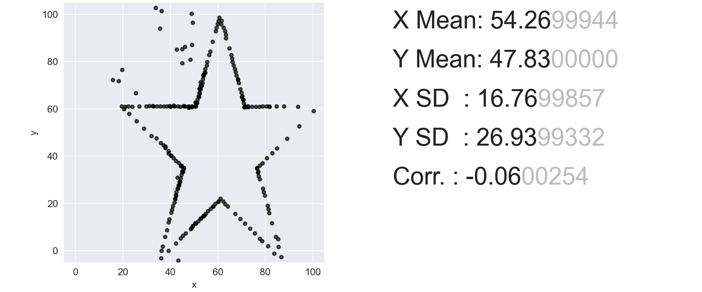
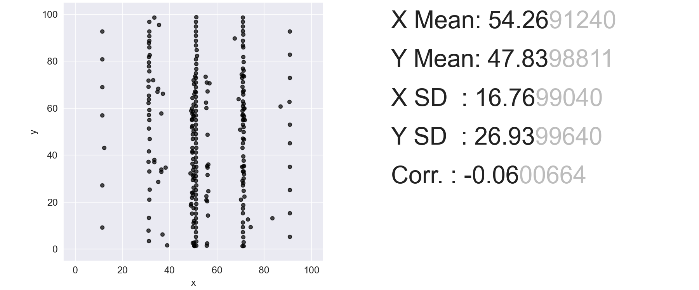
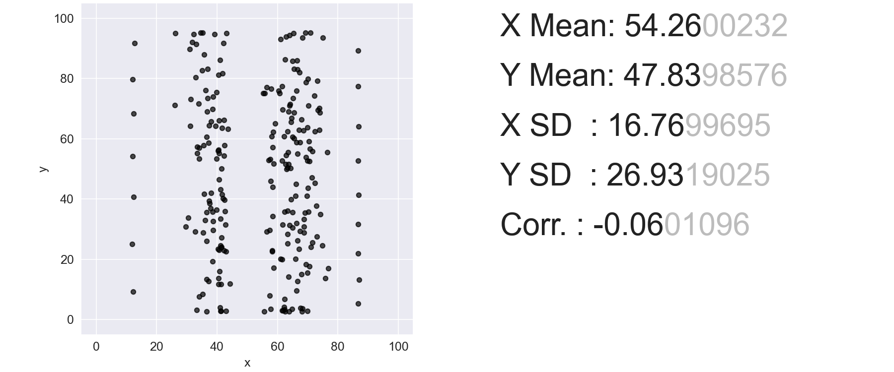
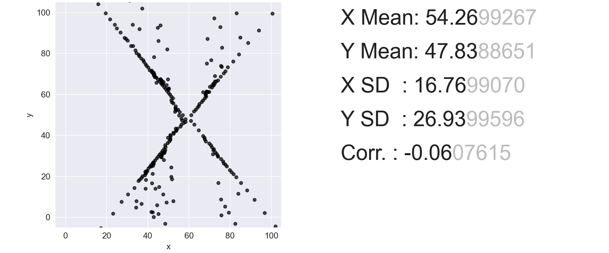
[1] Francis J. Anscombe. Graphs in Statistical Analysis. The American Statistician, 27(1):17–21, 1973. doi:10.1080/00031305.1973.10478966
[2] Justin Matejka and George Fitzmaurice. Same Stats, Different Graphs: Generating Datasets with Varied Appearance and Identical Statistics through Simulated Annealing. In CHI, page 1290–1294. Association for Computing Machinery, 2017. doi:10.1145/3025453.3025912
[3] Simon van Wageningen, Tamara Mchedlidze and Alexandru C. Telea. Same Quality Metrics, Different Graph Drawings. In Graph Drawing (GD) 2025, LIPIcs, doi:10.4230/LIPIcs.GD.2025.7
[4] Albert Cairo. Download the Datasaurus: Never trust summary statistics alone; always visualize your data, 2016. URL: http://www.thefunctionalart.com/2016/08/download-datasaurus-never-trust-summary.html.
[5] Sara Di Bartolomeo, Matěj Lang, and Cody Dunne. The worst graph layout algorithm ever. In Proc. alt. VIS workshop at IEEE VIS, 2022. doi:10.31219/osf.io/4hfy9
[6] Alister Machado, Michael Behrisch, and Alexandru C. Telea. Necessary but not sufficient: Limitations of projection quality metrics. Computer Graphics Forum, 2025. doi:10.1111/cgf.70101